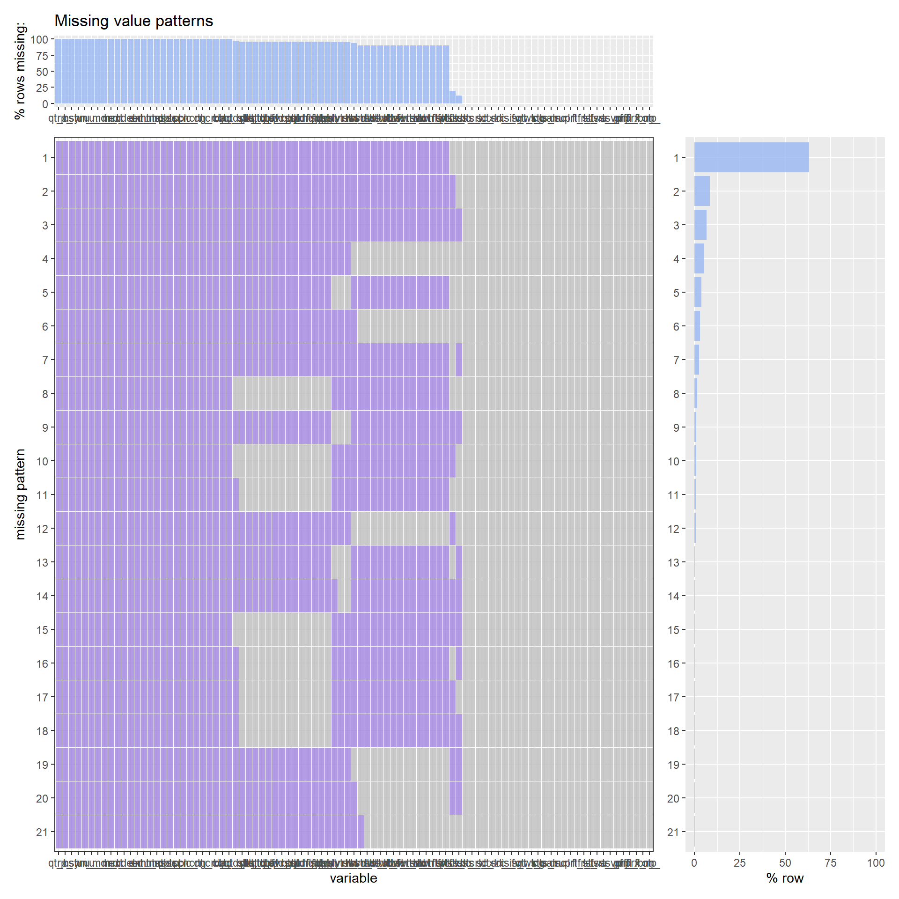
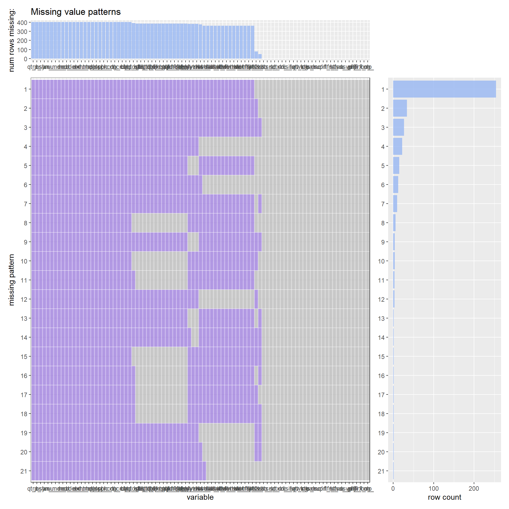
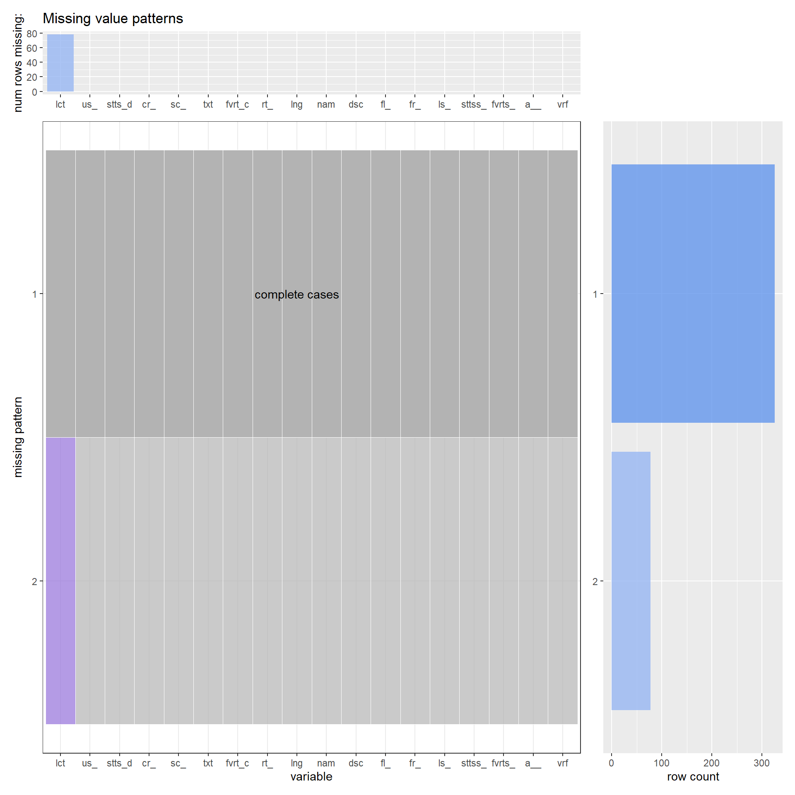
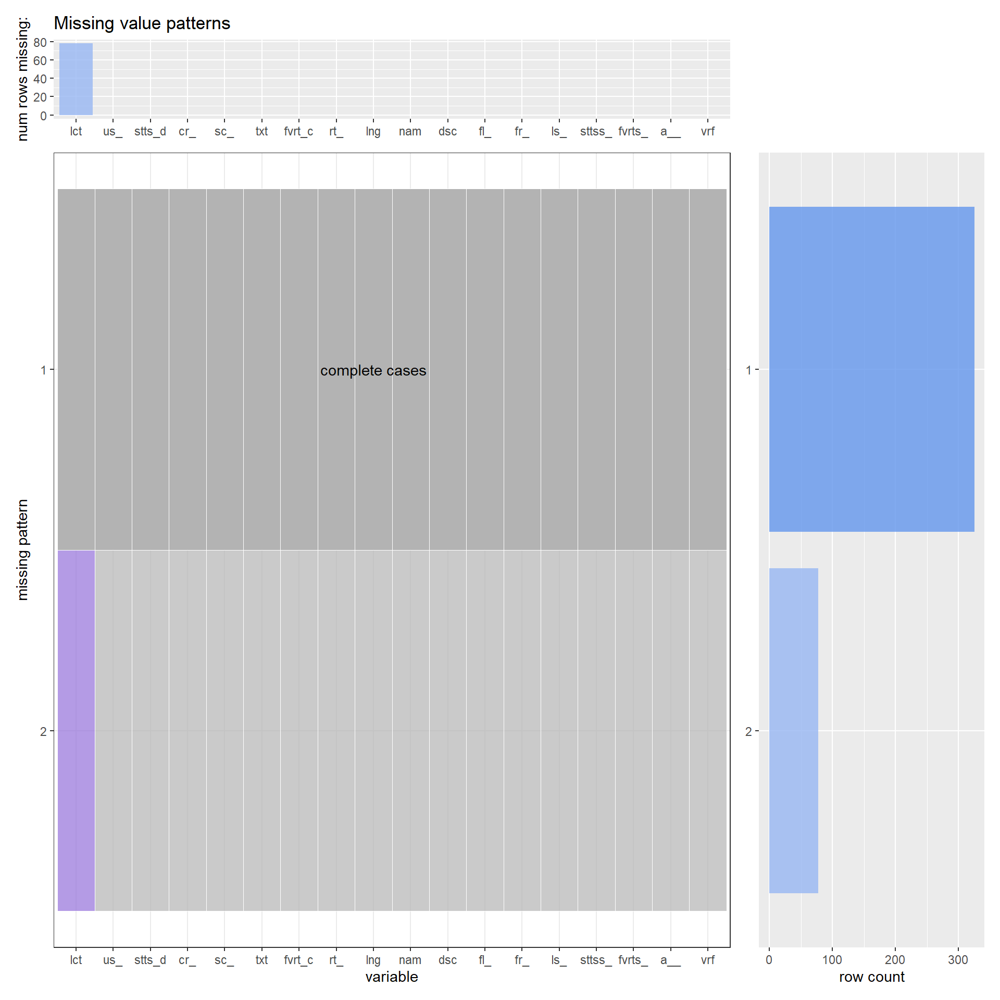

Chapter 4 Missing values
We collected 200 most recent tweets from top 50 users and chose the tweets that have at least one of the tags in them.
Get the tweet data from the csv file
We define the function that cleans the tweet data
Reference: https://stackoverflow.com/questions/31348453/how-do-i-clean-twitter-data-in-r
Clean the tweet data and extract the tweets that contains COVID related tags
After filtering, there are total of 403 rows (tweets)
## [1] 403Then we checked how many missing values each column has.
## # A tibble: 1 × 91
## user_id status_id created_at screen_name text source display_text_width
## <int> <int> <int> <int> <int> <int> <int>
## 1 0 0 0 0 0 0 0
## # … with 84 more variables: reply_to_status_id <int>, reply_to_user_id <int>,
## # reply_to_screen_name <int>, is_quote <int>, is_retweet <int>,
## # favorite_count <int>, retweet_count <int>, quote_count <int>,
## # reply_count <int>, hashtags <int>, symbols <int>, urls_url <int>,
## # urls_t.co <int>, urls_expanded_url <int>, media_url <int>,
## # media_t.co <int>, media_expanded_url <int>, media_type <int>,
## # ext_media_url <int>, ext_media_t.co <int>, ext_media_expanded_url <int>, …
It is hard to draw any significant conclusion from columns that have more than 95% of entries with missing values. Thus, we decided to remove all columns that have NA in more than 95% of entries.
## # A tibble: 403 × 48
## user_id status_id created_at screen_name text source
## <dbl> <dbl> <dttm> <chr> <chr> <chr>
## 1 2883841 1.46e18 2021-11-17 19:17:35 enews "#DWTS judge Der… Social…
## 2 2883841 1.46e18 2021-11-16 21:58:32 enews "9-1-1 Star Rock… Social…
## 3 2883841 1.46e18 2021-11-16 17:48:51 enews "Dancing With th… Social…
## 4 2883841 1.46e18 2021-11-16 15:24:06 enews "Miles Teller Se… Social…
## 5 138203134 1.46e18 2021-11-04 15:57:56 AOC "You can see thi… Twitte…
## 6 138203134 1.45e18 2021-10-15 04:18:53 AOC "And by the way,… Twitte…
## 7 138203134 1.45e18 2021-10-14 14:57:46 AOC "#Striketober co… Twitte…
## 8 138203134 1.45e18 2021-10-13 22:40:09 AOC "Thank you all f… Twitte…
## 9 2097571 1.46e18 2021-11-18 20:46:03 cnni "Richard Ayvazya… Social…
## 10 2097571 1.46e18 2021-11-18 19:45:06 cnni "Winter is almos… Social…
## # … with 393 more rows, and 42 more variables: display_text_width <dbl>,
## # reply_to_user_id <dbl>, reply_to_screen_name <chr>, is_quote <lgl>,
## # is_retweet <lgl>, favorite_count <dbl>, retweet_count <dbl>, lang <chr>,
## # retweet_status_id <dbl>, retweet_text <chr>, retweet_created_at <dttm>,
## # retweet_source <chr>, retweet_favorite_count <dbl>,
## # retweet_retweet_count <dbl>, retweet_user_id <dbl>,
## # retweet_screen_name <chr>, retweet_name <chr>, …## # A tibble: 1 × 48
## user_id status_id created_at screen_name text source display_text_width
## <int> <int> <int> <int> <int> <int> <int>
## 1 0 0 0 0 0 0 0
## # … with 41 more variables: reply_to_user_id <int>, reply_to_screen_name <int>,
## # is_quote <int>, is_retweet <int>, favorite_count <int>,
## # retweet_count <int>, lang <int>, retweet_status_id <int>,
## # retweet_text <int>, retweet_created_at <int>, retweet_source <int>,
## # retweet_favorite_count <int>, retweet_retweet_count <int>,
## # retweet_user_id <int>, retweet_screen_name <int>, retweet_name <int>,
## # retweet_followers_count <int>, retweet_friends_count <int>, …
We can observe that columns [retweet_status_id, retweet_text, retweet_created_at, retweet_source, retweet_favorite_count, retweet_retweet_count, retweet_user_id, retweet_screen_name, retweet_name, retweet_followers_count, retweet_friends_count, retweet_statuses_count, retweet_verified] all have 365 missing values, meaning they all have correlations to each other. They have equal number of missing values and there are 365 out of 405 tweets that have those column values missing, so we can assume that most twitter users don’t retweet the tweets regarding COVID. Also, columns [reply_to_user_id, reply_to_screen_name] have 384 values missing. These two columns are correlated to each other. Having 384 out of 405 entries missing indicates that most of the tweets regarding COVID are original posts, not replies to other posts. Column location has 78 missing values, which is approximately 25% of the 405 total entries. It seems that majority of the tweets regarding COVID have locations indicated, but it is at users’ discretion. Moreover, column profile_background_url has 48 missing values, which is approximately 12% of 405. The low proportion of missing values indicates that most users have profile background url posted, but it is also up to users’ choice.
There are still many columns that are not very significant for our final project’s purpose, even some columns that have no missing values. Thus, we trimmed down the number of columns further. Columns such as [source, display_text_width, reply_to_user_id, reply_to_screen_name, is_quote, is_retweet, retweet_status_id, retweet_text, retweet_created_at, retweet_source, retweet_favorite_count, retweet_retweet_count, retweet_user_id, retweet_screen_name, retweet_name, retweet_followers_count, retweet_friends_count, retweet_statuses_count, retweet_location, retweet_description, retweet_verified, status_url, url, protected, profile_url, profile_expanded_url, profile_banner_url, profile_background_url, profile_image_url, output] are all irrelevant or very insignificant in telling user’s activity and tweets regarding COVID, which is what we are mainly concerned with. Thus, we removed all those columns for the sake of simplicity and cleanliness.
## # A tibble: 403 × 18
## user_id status_id created_at screen_name text favorite_count
## <dbl> <dbl> <dttm> <chr> <chr> <dbl>
## 1 2883841 1.46e18 2021-11-17 19:17:35 enews "#DWTS ju… 46
## 2 2883841 1.46e18 2021-11-16 21:58:32 enews "9-1-1 St… 82
## 3 2883841 1.46e18 2021-11-16 17:48:51 enews "Dancing … 73
## 4 2883841 1.46e18 2021-11-16 15:24:06 enews "Miles Te… 82
## 5 138203134 1.46e18 2021-11-04 15:57:56 AOC "You can … 2123
## 6 138203134 1.45e18 2021-10-15 04:18:53 AOC "And by t… 18504
## 7 138203134 1.45e18 2021-10-14 14:57:46 AOC "#Striket… 14418
## 8 138203134 1.45e18 2021-10-13 22:40:09 AOC "Thank yo… 83780
## 9 2097571 1.46e18 2021-11-18 20:46:03 cnni "Richard … 33
## 10 2097571 1.46e18 2021-11-18 19:45:06 cnni "Winter i… 63
## # … with 393 more rows, and 12 more variables: retweet_count <dbl>, lang <chr>,
## # name <chr>, location <chr>, description <chr>, followers_count <dbl>,
## # friends_count <dbl>, listed_count <dbl>, statuses_count <dbl>,
## # favourites_count <dbl>, account_created_at <dttm>, verified <lgl> 

We can see that out of 18 columns, only ‘location’ column has some missing values remaining. We would have to impute the missing values or make a separate column for missing value indicator if we deem this column to be important for our future analysis. We used 200 tweets of top 50 users for creating this dataset, so the size of the dataset is small compared to what we will have for the final version of our project. When we use more tweets on more users, we may potentially have some more important observations.